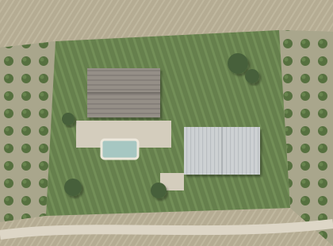
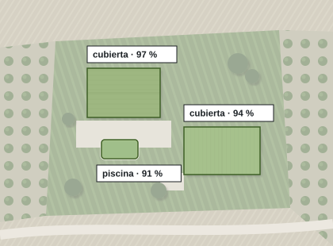
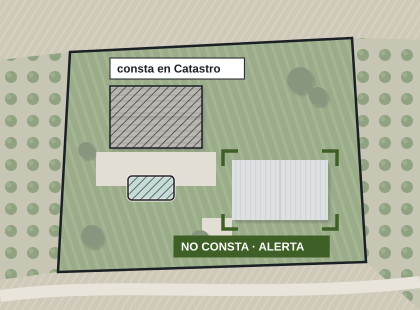
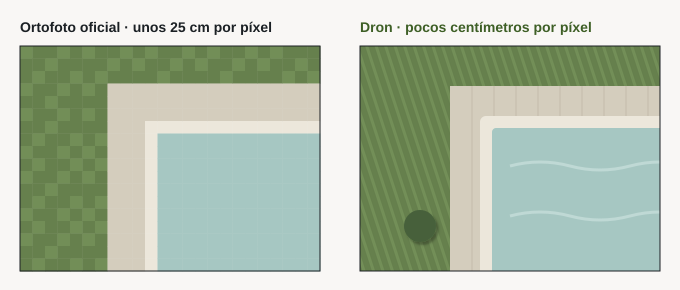
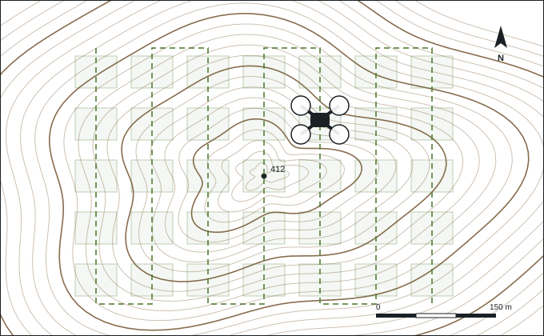

Catastro y teledetección.
Actualizamos el Catastro municipio a municipio. Con teledetección propia localizamos lo que falta, y lo dejamos listo para que llegue al recibo del IBI.

Actualización catastral: campo, gabinete y entrega.
Campo
Parcela por parcela: la incidencia fotografiada y el punto marcado.
Gabinete
Cruzar, depurar y cargar en las bases catastrales, dejando traza de cada decisión.
Entrega
Carpeta cerrada por municipio, con recuentos comprobados y hoja de revisión.
Teledetección: encontramos lo que el Catastro no ve.
Inteligencia artificial propia sobre imagen aérea, parcela a parcela. Usted recibe solo lo importante: las alertas, revisadas una a una por un técnico.
Pulse la leyenda del plano para encender y apagar cada capa. ¿Necesita buscar otra cosa? El sistema se entrena a medida.
- A1Parcela 412 · nave sin registrar
- A2Parcela 414 · piscina sin registrar
- A3Parcela 415 · ampliación de la vivienda
- D1Parcela 416 · descartada: suelo con escombro
Tres miradas a cada parcela.
La imagen, lo que reconoce la IA y lo que dice el Catastro. Si no coinciden, hay alerta.
1. La imagen aérea

2. Lo que reconoce la IA

3. Lo que consta en el Catastro

No adivinamos. Medimos.
Comparamos los metros que ve la IA con los que constan en el Catastro. La diferencia es la alerta. Pruebe con tres parcelas de ejemplo.
Superficie de la parcela: 2.400 m²
Del término entero al último metro.
La ortofoto oficial cubre todo el municipio. Nuestro dron con RTK llega donde hace falta detalle.


Ortofoto oficial
Todo el término, con su fecha de vuelo.
Cartografía catastral
Las parcelas y construcciones que constan, para comparar.
Dron con RTK
Ortofoto de detalle, modelo del terreno y curvas de nivel, a fecha de hoy.
Campo
La comprobación final, con foto y referencia catastral.
Alertas listas para actuar.
Nada de mapas que interpretar: parcelas con su referencia, sus imágenes y una decisión.
- Alertas ordenadas por prioridad.
- Una hoja de revisión por parcela.
- Una capa para su SIG y un Excel con cada referencia.
- El listado para la visita a campo.
- Superficie
- 3.100 m²
- Ve la IA
- 520 m²
- Consta
- 240 m²
- Diferencia
- 280 m²
Una máquina que no decide sola.
Revisión humana
Cada alerta la valida un técnico antes de salir.
Sin atajos
Lo dudoso se mira; no se descarta con un número.
Medido sin trampas
Su acierto se mide en zonas que nunca vio al aprender.
Su municipio
Se adapta a cualquier término municipal.
Padrón y licencias.
Cada hogar, con su referencia catastral
- Emparejamiento de vías y números, con las dudas marcadas y no resueltas a ciegas.
- Cruce por los catorce primeros caracteres de la referencia, los que identifican el inmueble.
- Hoja de control con el recuento de hogares por pueblo.
Licencias que el Catastro aún no recoge
- Cruce de las licencias del ayuntamiento con la antigüedad catastral.
- Lo ya reflejado se descarta solo.
- Lo pendiente sale con su imagen aérea, listo para revisar.
Del Catastro a la liquidación.
- Planes de inspección sobre la base catastral ya depurada.
- Expedientes sancionadores: tramitación y control de plazos.
- Actas con su documentación gráfica y catastral.
- Liquidaciones a partir de los datos comprobados.
Planos y cartografía catastral.
Planos que se entienden y se pueden comprobar, en el formato que pide cada trámite.
- Planos de parcela a escala, con norte, cotas y recintos.
- Ortofoto, modelo del terreno y curvas de nivel con vuelo propio de dron.
- Cartografía adaptada al formato de la Dirección General del Catastro.
- KML para Google Earth con la ficha de cada parcela.
Antes de superponer dos capas comprobamos el sistema de referencia de cada una.
Otros trabajos catastrales.
Memorias para concurso
Redactadas conforme al pliego, cuidando el formato que puntúa.
Listados catastrales
Extracción, cruce y control de ficheros de intercambio.
Fotografía de fachadas
Comprimida al tope del pliego, sin perder el GPS.
Lo que nos preguntan.
¿La teledetección sustituye al trabajo de campo?
No: lo dirige. El equipo va solo a las parcelas con alerta.
¿Una alerta basta para regularizar?
Es un indicio documentado. La regularización la tramita el organismo competente tras comprobarla.
¿De qué fecha es la imagen?
La más reciente disponible, y consta en cada entrega. Si es antigua, volamos con el dron.
¿Qué tiene que aportar el ayuntamiento?
Poco: la cartografía catastral es pública. El resto se acuerda en el encargo.
¿Se puede probar antes?
Sí. Empezamos por un sector de su municipio y usted decide con resultados reales.
¿Qué municipio quiere poner al día?
Empezamos por un sector de prueba: verá alertas reales de su término antes de decidir.
- emiliocontadorbrito@gmail.com
- Calle Matilde Tagle Ortiz, 28, 5.º D, 06006 Badajoz